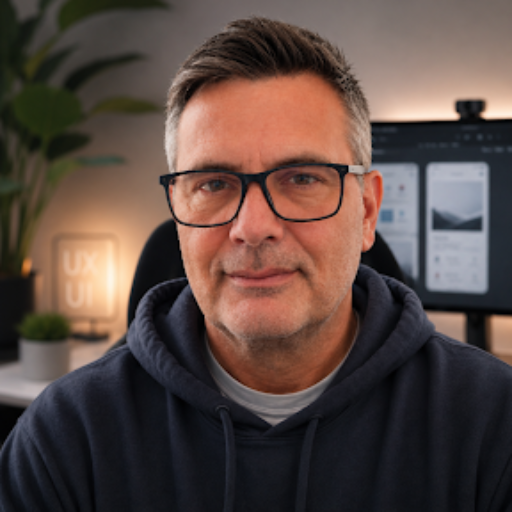
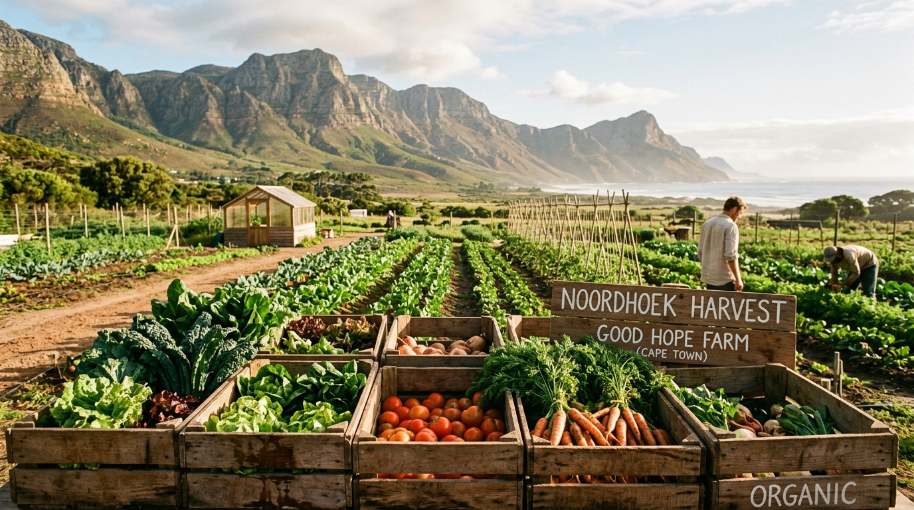
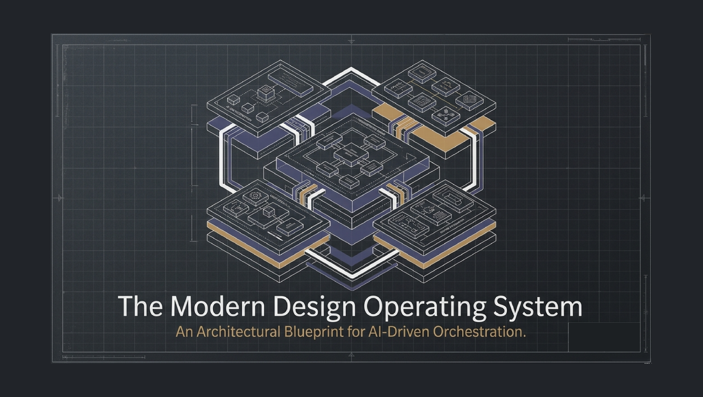
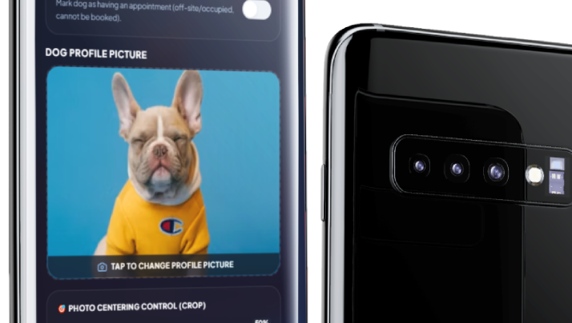
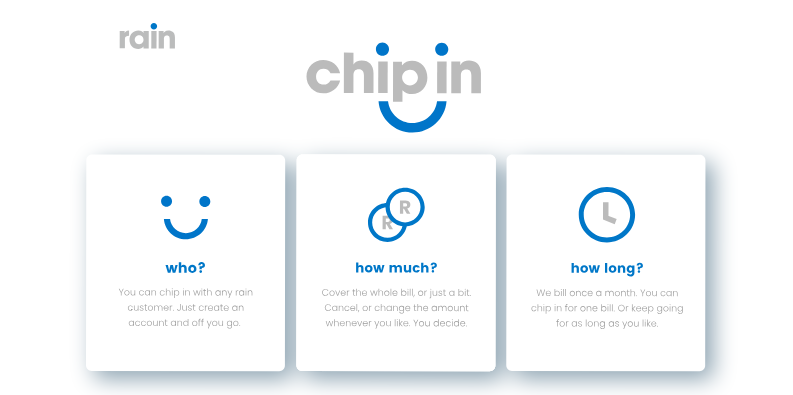
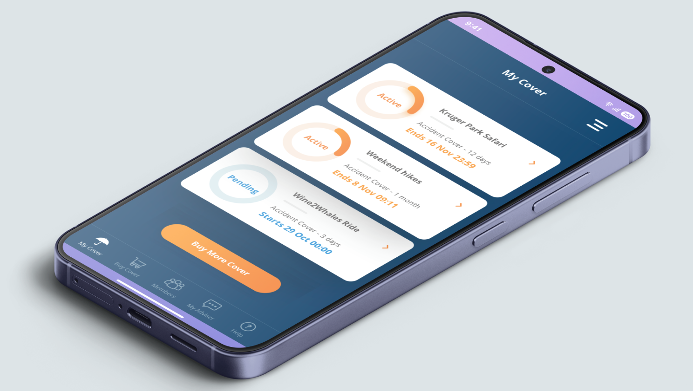

Paul
Bristow-Bovey
Designing better products. Building better ways to deliver them. I'm a senior product designer with over a decade of experience creating digital experiences across web, mobile and complex product environments. My work connects UX, interaction design, visual systems and implementation, with a growing focus on AI-enabled product delivery.
Designing for clarity, systems & delight

I'm a senior UX/UI and product designer with over a decade of experience creating digital products across agency, consultancy and in-house environments.
My background spans print, interactive media, front-end development and product design. It's given me a practical understanding of the entire process, from untangling complex user problems and shaping intuitive experiences to building scalable design systems and getting products into people's hands.
I enjoy working where design, technology and business overlap. Whether I'm refining a user journey, mentoring designers or working alongside developers, my focus is on creating thoughtful, well-crafted solutions that work beyond the design file.
More recently, I've been exploring how AI-assisted workflows, design systems and design engineering can change the way we build digital products. I'm particularly interested in closing the gap between design intent and working software, creating smarter, more connected ways of working without losing the human thinking that makes good design valuable.
Career
Timeline
Selected Work

A clear online presence and seasonal box order flow for a Noordhoek farmer. Customers choose what they would prefer, then send Mike a ready-to-go WhatsApp order - keeping availability, demand and fulfilment simple to manage.

Exploring a new model for AI-assisted product design, connecting knowledge, orchestration, design systems, code and telemetry into a continuous learning loop.

A mobile-first volunteer scheduling platform that helps animal shelter staff and dog walkers coordinate exercise sessions, prioritising the dogs most in need of attention.

Rain's unlimited data products are often used by families, roommates, couples and shared households. While one person typically owns the account, the cost is frequently shared informally through bank transfers or cash.

In partnership with Liquorice, I was responsible for the UX and UI design on Sanlam's Go Cover insurance app, taking the product from early journeys and wireframes through to testing, final UI and front-end design, in collaboration with developers.
Designing and animating short-form explainer video content - translating technical scripts into visually clear, motion-paced e-learning experiences.